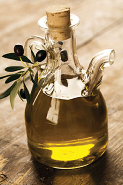

Cancer is the second leading cause of death in the United States. Worldwide, in 2002, there were approximately 11 million new cases of cancer, 7 million cancer deaths and almost 25 million people living with cancer. U.S. projections for 2008 estimate almost 1.44 million new cancer cases and over 565,000 deaths. However, cancer death rates have been slowly but steadily declining, thanks to earlier detection and treatment advances. While some people inherit genes that dramatically raise the risk for certain cancers, only 5 percent to 10 percent of cancers of the breast, ovaries and colon are attributed to genetic factors. This means that environmental factors, many of which you can control, cause the majority of cases. Here are some of the most important choices you can make to reduce your risk of developing cancer.
A 1997 report from the World Cancer Research Fund and the American Institute for Cancer Research estimated that diet accounted for one-third of cancer deaths. Dr. Eleni Linos, who researches the impact of diet on cancer at Harvard Medical School, says, “The field of nutrition and cancer is complicated.” Linos says that dietary relationships can vary with different types of cancer. Nevertheless, because good diet is so important to overall health and especially cardiovascular health, it would be silly to throw up our hands and eat fried chicken and Twinkies all day. Here are some diet recommendations.
Follow a plant-based diet. Plant foods contain vitamins, minerals and fiber, plus plant pigments and compounds similar to estrogen. Many of these compounds protect us by acting as antioxidants, stimulating the immune system, enhancing detoxification and modulating hormones. Plus, all plants contain the green pigment chlorophyll, which turns on genes that crank out detoxifying enzymes, thus reducing exposure to carcinogens.
Graze on berries. Berries, cherries and red grapes all are nutrient dense. Anthocyanins (a type of flavonoid that provides those red, blue and purple pigments) are antioxidant and anti-inflam-matory, so they have anti-cancer effects.
Crunch cruciferous vegetables. This plant family - broccoli, cauliflower, cabbage, mung beans, alfalfa sprouts (Read more about cooking with sprouts in Kitchen Counter Gardening: Try Sprouts.), Brussels sprouts, arugula, watercress and others - contains glucosinolates, which break down in the body to form anti-cancer substances. Studies link increased consumption of cruciferous vegetables with reduced cancer risk. Broccoli is particularly famous for its anti-cancer power.
Eat complex carbs. Overeating refined carbohydrates (particularly combined with excess weight and inactivity) can elevate blood sugars, which can stimulate cancer growth. A Korean study found that among diabetics with high blood glucose levels, the risk of cancer deaths rose 27 percent in men and 31 percent in women.
You can keep your blood sugar more constant by substituting foods high in sugar and refined flour with whole-grain foods, fruits and vegetables. These foods also are rich in fiber, which may help bind potentially carcinogenic toxins in the bowel, thus preventing their absorption into the blood stream. Earlier studies linked fiber with protection against cancer in the colon and other parts of the body, though some recent studies haven’t supported that link. A 2004 study did find that refined-grain products increased rectal cancer risk, whereas more vegetables, fruit and whole-grain products reduced cancer risk.
Add spice to your life. Some culinary herbs and spices are proving themselves valuable in the war against cancer. Standouts include turmeric and ginger. Both contain potent anti-inflammatory substances - curcumin and gingerol, respectively. Because inflammation plays a role in the development of certain cancers, anti-inflammatory substances are beneficial in cancer prevention.
Go for garlic. Population studies suggest that eating garlic has cancer-protective effects. Garlic boosts immunity, acts as an antioxidant, inhibits proliferation of cancer cells, induces cancer cell death and enhances enzymes that detoxify carcinogens. Some of garlic’s key ingredients are unstable, and heat can ruin them. To maximize benefits, either add raw, minced garlic to dressings, dips, soups and sauces, or crush the garlic, let it sit for 10 minutes (which allows for the formation of active ingredients), then add it to the cooking pot.
Minimize meat. A greater intake of meat has been linked to an increased risk in cancer of the colon, stomach, uterus, prostate and breast. Red meat, processed meats, grilled meats, well-done meat and fried animal-based foods seem to be the most problematic in regard to cancer risk.
Choose your fats wisely. The link between high dietary fat and cancer is murky because the type of fat may be what’s important. High saturated fat (animal fats) and trans fats (hydrogenated fat found in many processed foods) seem to increase cancer risk, while monounsaturated (olive oil) and polyunsaturated fats (most vegetable oils and cold-water fish oil) seem to be protective. People who follow the classic Mediterranean diet - high in fruits, vegetables, grains and olive oil, and low in meat - have lower rates of cancer. The omega-3 fatty acids found in flaxseed oil and cold-water fish also are associated with reduced cancer risk.
Regular exercise has been linked with a significant reduction of cancer risk. Physically active women can lower their risk for breast cancer by 20 percent to 40 percent. Overweight women who achieve and sustain a weight loss of 20 or more pounds can cut their breast cancer risk in half. Obesity increases hormones such as insulin and estrogen that encourage tumor formation.
Avoid tobacco. Tobacco use, including smokeless tobacco, is the No. 1 preventable cause of cancer, and smoking is responsible for an estimated 30 percent of all cancers. Long-term exposure to secondhand smoke also raises the risk. Tobacco causes not just lung cancer, but also cancer of the mouth, throat, esophagus, pancreas, bladder, stomach, liver, kidney, cervix, breast and bone marrow. People who quit by age 30 reduce their chances of dying from cancer and other smoking-related diseases by more than 90 percent - though kicking the habit at a later age still reduces the risk of premature death.
Keep alcohol to a minimum. Heavy drinking increases the risk of cancer; even moderate drinking can raise breast cancer risk. One or two drinks per day increases breast cancer risk by 10 percent, and more than three raises risk by 30 percent.
On the other hand, moderate drinking is associated with a lower risk of cardiovascular disease and greater longevity. If a glass of wine with dinner is a habit you don’t want to give up, know that taking the B vitamin folate protects against the alcohol-induced risk of breast cancer.
Avoid stress overload. Chronic stress depresses immune function, and one of the immune system’s jobs is to destroy abnormal cells such as cancer cells. Animal studies show that stress and stress hormones increase cancers, though human research hasn’t been able to yoke stress to cancer. Such a link is hard to prove. For one, cancer takes years to develop and likely involves multiple factors. Because stress overload erodes many aspects of physical and mental health, it still makes sense to manage this modern-day affliction.
Stay social. A number of studies have linked social isolation to degradation of mental and physical health. A French study showed that socially disconnected people had a greater risk of dying from cancer. Social support may also be important to survival after a cancer diagnosis. In 1989, a landmark study by psychiatrist Dr. David Spiegel at Stanford University found that group therapy doubled survival time.
Get screened. A number of cancers - colon, breast, skin, cervix and prostate - can be detected early with screening examinations. Talk to your doctor about your family history and other risk factors, and follow your doctor’s recommendations about these tests. The chances of surviving cancer rise the earlier treatment begins.
With the exception of avoiding tobacco, any of these lifestyle changes will likely produce modest benefits. Live well, incorporate many healthy acts into your routine, and the impact is significant.
|
JAMES STEIDL/FOTOLIA From regular checkups to dietary changes, there are a number of choices you can make to minimize your risk of getting cancer. |
 FOTOLIA Adding olive oil to your diet can help prevent cancer. |
FOTOLIA From chlorophyll to special compounds, fresh produce provides a range of benefits to help protect against cancer. |
|
FOTOLIA Minimize alcohol consumption to minimize your cancer risk. |
ISTOCKPHOTO Regular exercise may significantly reduce your risk for cancer. |
FOTOLIA Dark berries - such as cranberries - offer protection from cancer. |
|
OLGA LYUBKINA/FOTOLIA Whole grains such as amaranth are another good addition to your diet for cancer protection. |
FOTOLIA Garlic can be added to meals or even raw, if you’re feeling adventurous! |
LIQUID LIBRARY Get regular medical screenings; early detection is invaluable. |
|
FOTOLIA Cruciferous vegetables are as fun to eat as “cruciferous” is to say, and they break down in the body to form anti-cancer substances. |
ISTOCKPHOTO Reduce your intake of red meat, processed meats, well-done meat and fried animal-based foods. |
KATI MOLIN/FOTOLIA Stess is dangerous to your health; relaxing regularly is an important element of a healthy lifestyle. |
|
FOTOLIA Social isolation has been linked to degradation of mental and physical health. Make a point to make time to enjoy friends and family. |
|
|